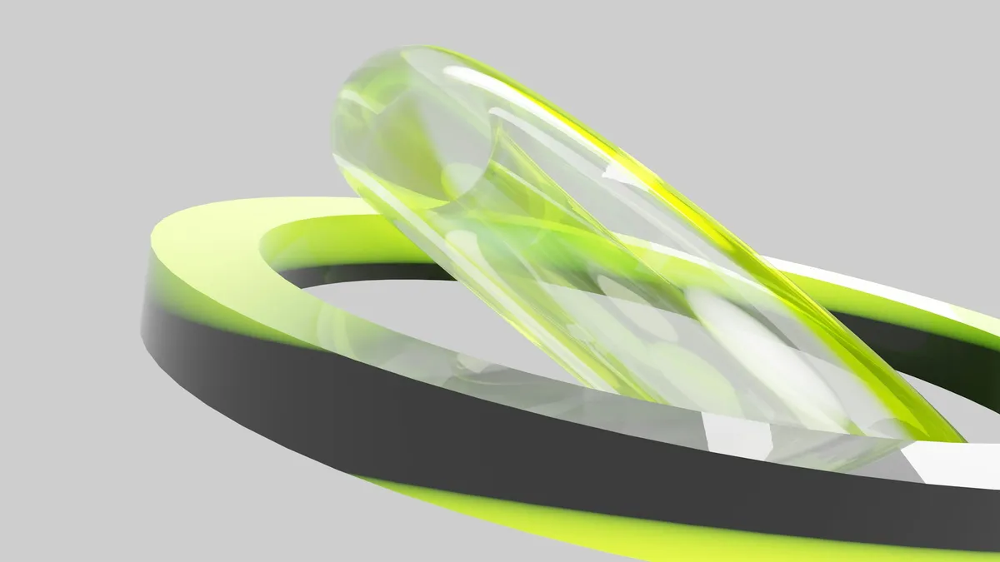

Design service
Draft
Forma launch siteInes, founder · live in 1 to 3 weeks
 MoodboardPalette, type and a gridPDF
MoodboardPalette, type and a gridPDF Design and codeFive pages, built in code5
Design and codeFive pages, built in code5
Live on your domainforma.studio, connectedLiveFrom$500and up
Slide to book the service
Slide the knob across